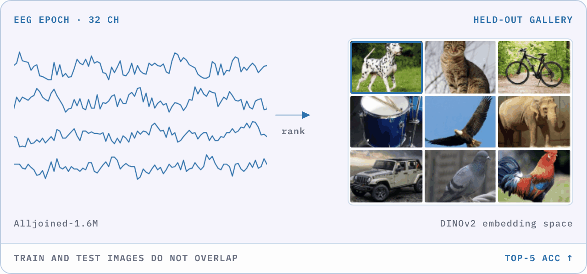
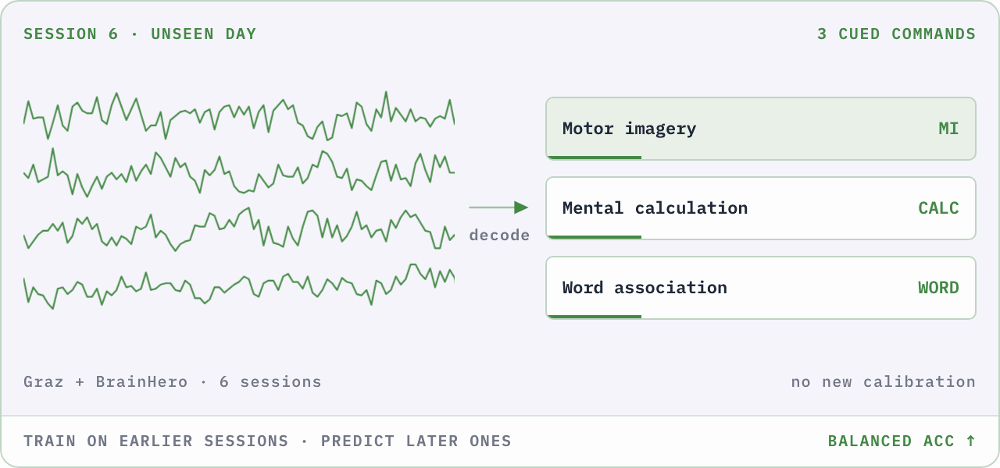
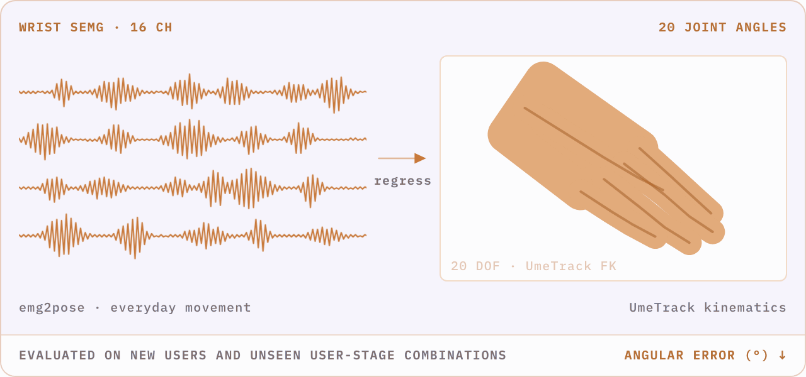

Understand the challenge.
Compare tracks, datasets, metrics, prizes, rules, dates, and organizers. Use this site to find the right next destination.
Explore the tracks →This guide takes you from choosing a track to submitting a trained model. NeuralBench defines the tasks, public datasets, and reference baselines; the Benchopt starting kits are the evaluation framework you use to run experiments and package an upload-ready submission — the same code Codabench runs. You may also bring your own pipeline. Registration, uploads, and official evaluation happen on Codabench.
This website is your map. NeuralBench defines the tasks, datasets, and reference baselines; the Benchopt starting kits are the framework for running experiments and packaging a submission; Codabench is the official participation and evaluation platform.
Compare tracks, datasets, metrics, prizes, rules, dates, and organizers. Use this site to find the right next destination.
Explore the tracks →Copy a baseline solver from the Benchopt starting kit — built on NeuralBench's tasks and datasets — train it, and it packages an upload-ready submission for you. Or bring your own pipeline.
Choose how to train ↓Read the Submission Guide, register for each track, upload your trained model package, and receive official scores.
Open a Codabench track portal ↓Each track pairs a NeuralBench guide — public development data, an explicit train/validation/test split, and a reference baseline — with its Benchopt starting kit in the competition repository, the same benchmark Codabench runs. Follow the guide once for a verified pipeline, then use the starting kit to run experiments and package your submission. Neither is required. The reference results below belong to the named development datasets and are not Codabench warm-up leaderboard scores.
pip install benchoptgit clone https://github.com/neural-interfaces26/2026-competitioncd 2026-competitionbenchopt run tracks/image_decoding -d Simulated -o "Image-decoding[training=True]"
Clone the competition repo and run the zero-download Simulated smoke test — the same benchmark Codabench runs.
pip install neuralbenchneuralbench eeg image --downloadneuralbench eeg image --prepareneuralbench eeg image -m eegnet --debug
Install NeuralBench once, download the public data, prepare the cache, and verify the pipeline with a short EEGNet run.
Baseline results obtained on THINGS-EEG2 (Gifford2022Large), using the split defined in the Track 01 NeuralBench start kit.
configs/img/eegnet.yamlconfigs/img/reve_frozen.yamlReference values: Mean ± standard deviation from NeuralBench (Banville et al., 2026), Table 1.
pip install benchoptgit clone https://github.com/neural-interfaces26/2026-competitioncd 2026-competitionbenchopt run tracks/bci_decoding -d Simulated -o "BCI-decoding[training=True]"
Clone the competition repo and run the zero-download Simulated smoke test — the same benchmark Codabench runs.
pip install neuralbench 'moabb>=1.7.1'neuralbench eeg motor_imagery --dataset dreyer2023 --downloadneuralbench eeg motor_imagery --dataset dreyer2023 --prepareneuralbench eeg motor_imagery --dataset dreyer2023 -m eegnet --debug
Install the MOABB data dependency, download the Dreyer 2023 warm-up proxy, prepare its cache, and verify the EEGNet pipeline.
Baseline results obtained on Stieger 2021 (Stieger2021Continuous), a four-class motor-imagery dataset, using the split defined in the Track 02 NeuralBench start kit. Codabench currently uses Dreyer 2023 for warm-up evaluation, so these are not Codabench warm-up scores.
configs/bci/eegnet.yamlconfigs/bci/reve.yamlReference values: Mean ± standard deviation from NeuralBench (Banville et al., 2026), Table 1.
pip install benchoptgit clone https://github.com/neural-interfaces26/2026-competitioncd 2026-competitionbenchopt run tracks/sleep_onset -d Simulated -o "Sleep-onset[training=True]"
Clone the competition repo and run the zero-download Simulated smoke test — the same benchmark Codabench runs.
pip install neuralbenchneuralbench eeg sleep_onset --downloadneuralbench eeg sleep_onset --prepareneuralbench eeg sleep_onset -m eegnet --debug
Install NeuralBench once, download Sleep-EDF, prepare the cache, and verify the sleep-onset pipeline with a short EEGNet run.
Baseline results obtained on Sleep-EDF (Kemp2000Analysis), using the participant-level split defined in the Track 03 NeuralBench start kit.
configs/sleep/eegnet.yamlconfigs/sleep/reve.yamlReference values: Mean ± standard deviation from NeuralBench (Banville et al., 2026), Table 1. Here, bMAE is the unweighted mean of the MAE computed within each non-empty time-to-onset bin.
pip install benchoptgit clone https://github.com/neural-interfaces26/2026-competitioncd 2026-competitionbenchopt run tracks/emg_pose -d Simulated -o "EMG-pose[training=True]"
Clone the competition repo and run the zero-download Simulated smoke test — the same benchmark Codabench runs.
pip install neuralbench 'eegdash>=0.8.2'neuralbench emg pose -m vemg2pose --downloadneuralbench emg pose -m vemg2pose --prepareneuralbench emg pose -m vemg2pose --debug
Install the EEGDash data dependency, then use VEMG2Pose for downloading, caching, and the debug run so every window has the required context.
Baseline result obtained on public EMG2Pose (Salter2024Emg2pose), using the task split defined in the Track 04 NeuralBench start kit.
tasks/emg/pose/config.yamlReference values: Mean ± standard deviation from NeuralBench (Banville et al., 2026), Table 1.
Pick by your architecture: your own model — or any non-NeuralBench architecture — trains best in the Benchopt starting kit, while a NeuralBench-native model (the built-in task-specific and foundation models) trains in NeuralBench. Every path finishes with a trained model exposed through the Codabench submission contract.
Each track is a Benchopt benchmark — the same code Codabench runs. Copy a baseline solver, train it on the study you choose, and the run reproduces the leaderboard's evaluation locally and writes an upload-ready submission for you.
Open the Benchopt starting kit ↗Reuse its data access, task definitions, metrics, and reference baselines. The track start kits above give a verified pipeline before you add your own model — reproduce a published baseline, swap in your architecture, or extend the workflow.
Explore NeuralBench ↗Train with your preferred codebase and permitted data. NeuralBench does not need to be part of your training stack or final submission, provided your trained model satisfies the track input, output, and packaging contract.
Review track requirements →Same destination: whatever the training path, you upload a trained model to Codabench. The submission guide shows how the Benchopt starting kit packages that upload for you.
Once your model is trained, open the Codabench Submission Guide for your track. It defines the submission contract. Follow it to package your model, upload it through My Submissions, and confirm that your score reaches the leaderboard.
Two evaluation stages: Warm-up scores use public test data and are indicative. Codabench switches to the private 2026 cohorts for the sealed phase, and only sealed scores determine the final ranking.



